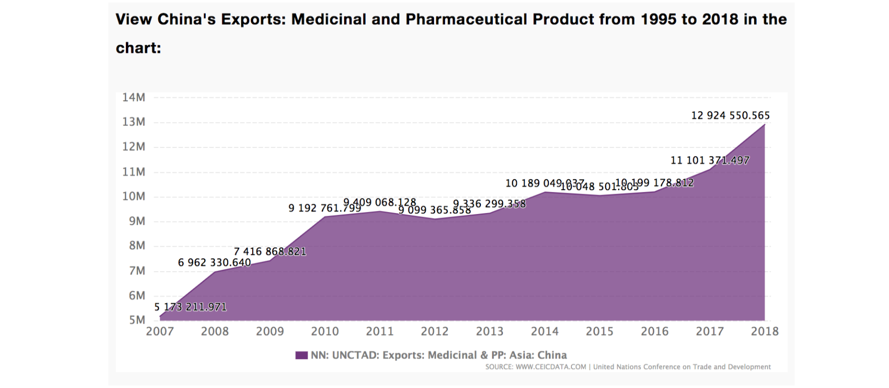
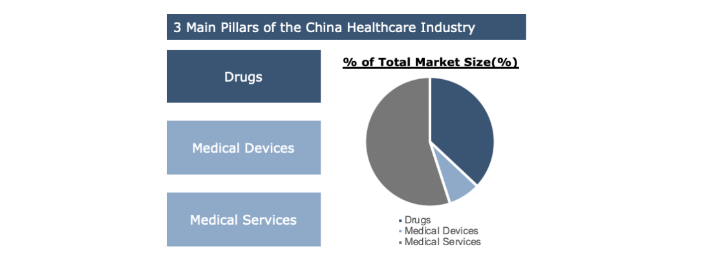
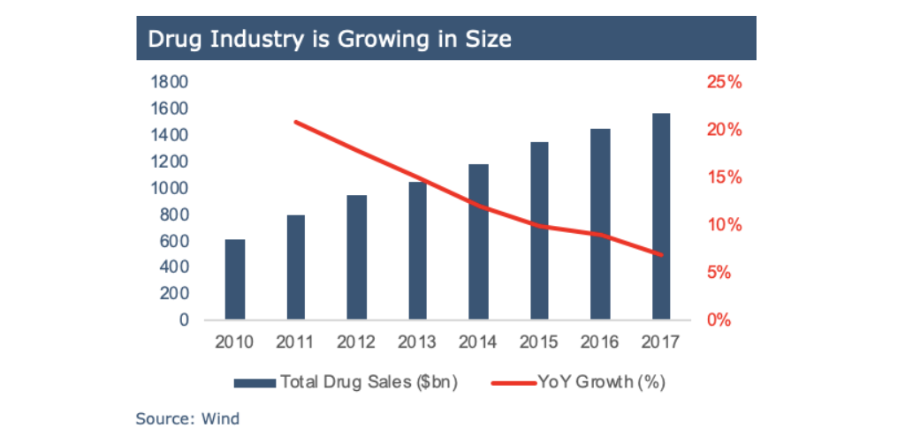

Industry Overview
Customer Segmentation | Overview of China Healthcare Industry | Overview of China Drug Industry

Like most countries, there are private and public hospitals. Private hospitals take up more than 60% of the total hospitals. As of February 2019, there had been a total of 33,000 hospitals in China, an increase of 1,866 in the same period of 2018. In the first two months of 2019, there were 550 million patient visits to hospitals in China, up 3.2% year on year. Given that the aging population is on the rise, it is believed that the number of patients would continue to grow and the consumer need towards drugs would be increasing continuously. In general, a 3-tier system is used for public hospitals, namely Primary, Secondary or Tertiary institutions. This indicates that the primary customer of pharmaceutical companies, especially the drug manufacturer, would be hospitals among these three tiers.
As the Chinese have a growing ability to self-medicate, we are expecting an increase in the number of OTC retail pharmacies. Indicating that retail pharmacies would become a more important point of sales to the companies. By the end of 2018, there had been 5,985 drugstore chains in possession of 463,200 retail stores in China, of which 242,560 were chain stores, taking up 52.4% of the total, up by 2 percentage points on an annualized basis; 88.3% of stores were directly run by retailers themselves; 72% were designated medical insurance stores. In China, leading drug retail chains include Yunnan Hongxiang Yixintang Pharmaceutical Co, Ltd, Dashenlin Pharmaceutical Group Co, Ltd, LBX Pharmacy, Yifeng Pharmacy, Sinopharm, China Nepstar Chain Drugstore, Gansu Zhongyou Health Medicine Co, Ltd, Suzhou Quanyi Health Drugstore Chain Co, Ltd, Chongqing Tong Jun Ge Co, Ltd. and Yunnan Jianzhijia Health Drugstore Chain Co, Ltd, among which Chongqing Tong Jun Ge Co, Ltd. has 10,575 drugstores, the most among all retail chains, and Yunnan Hongxiang Yixintang Pharmaceutical Co, Ltd. boasts the largest number of direct-sale stores, numbering 5,758, all of which are directly operated by the company. Securing a tight relationship with the retailers above would be particularly important especially towards the wholesaler, as they have a high market share and one contract might guarantee presence in many shops.
The exports of pharmaceutical companies have been increasing steadily. (Graph 1) Chinese drugmakers are expected to increase exports and physical presence in higher-reward African countries especially.
There are 3 main pillars on the China Healthcare industry where medical services and drugs accounted for most of the total market size, 55% and 37% respectively. Medical Devices only accounts for 8% of total market size of whole China Healthcare Industry.
China Healthcare Industry is having strong growth potential. The expected growth in the next 3 years: Drugs (~5-10% ), Medical Devices (~15%), Medical Services (~10-15%) The main driver for the growth comes from the increase in national income, increase in country medical expenses & per capita medical expense. Moreover, there is a changing mindset that people are perceiving healthcare is a necessity. It is also part of the national strategy to ensure the good quality healthcare service in China.

Drug industry is growing in size without a market ceiling. The YoY growth of total drug sales from 2016 to 2017 is around 7%. It reflects that the growth in drug sales in China is still robust and is expected to continue in the coming years.
Although drug industry is growing, the development of new drugs has been lackluster in China. The new drug as % of total volume is lowest in China when compared with U.S, Japan and Taiwan. New drugs account for 15% of total drugs sales in 2017 in China, expecting the figure to increase to 30% in 2023 and 50% in 2028. It reflects the strong growth potential for the new drugs in China.
There are several seasons for low new drugs volume.
1. It is still an early stage of development in China, which lacks technology and expertise.
2. There is a slow IND/NDA process which makes US/Europe drugs fail to enter China hindering innovation in new drugs.
3. There is a slow update in China’s medical catalog, affecting rollout of new drugs
Customer Segmentation | Overview of China Healthcare Industry | Overview of China Drug Industry
The Life of a Drug | Demystifying R&D + Drug Registration | Supply Chain and Major Players (Competitive Landscape)
Policy & Regulation Support | Distribution Channel
Company 1 - Sino | Company 2 - Henrui
Regulatory and Policy: Centralized Procurement | National Reimbursement Drug List (NRDL)
Industrial Jardon | Interesting Video
The Economist - China’s pharmaceuticals industry is growing up
The Economic Times - Chinese growth shot’s some years away for pharma companies
China Daliy - Pharma companies undergoing critical transformation

Pharmaceutical Technology - Characterising Eastern China’s pharmaceutical manufacturing market: Shandong and Jiangsu
Express Pharma - Is China the next land of opportunity?